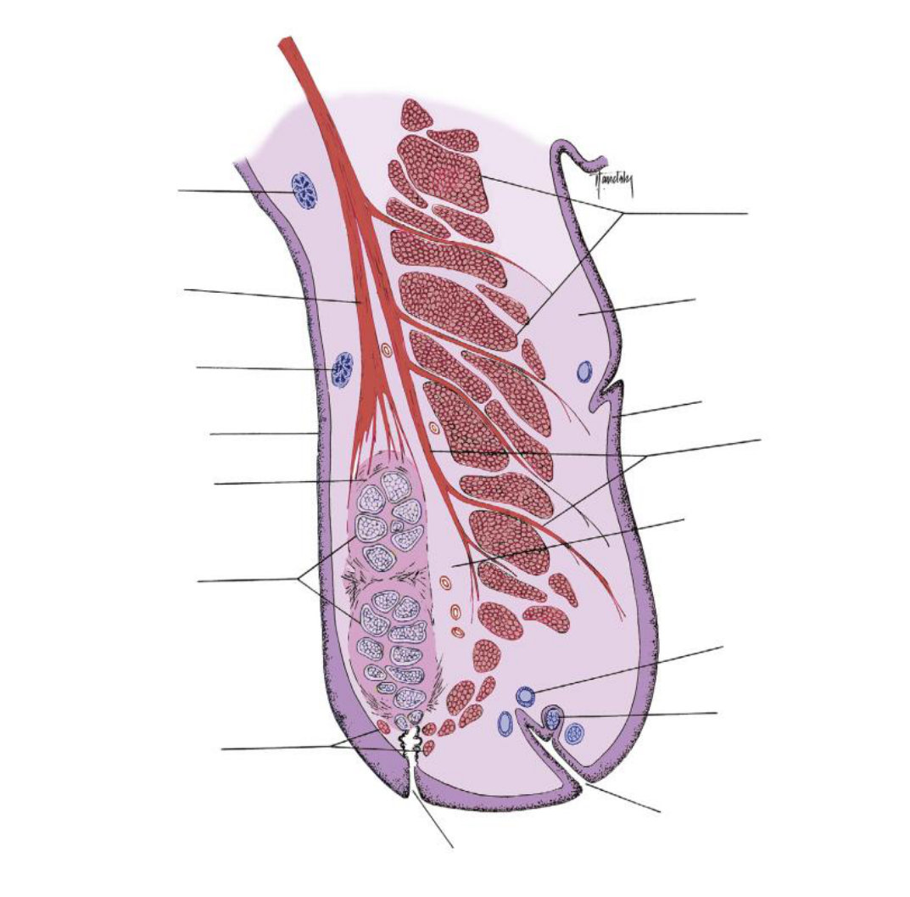
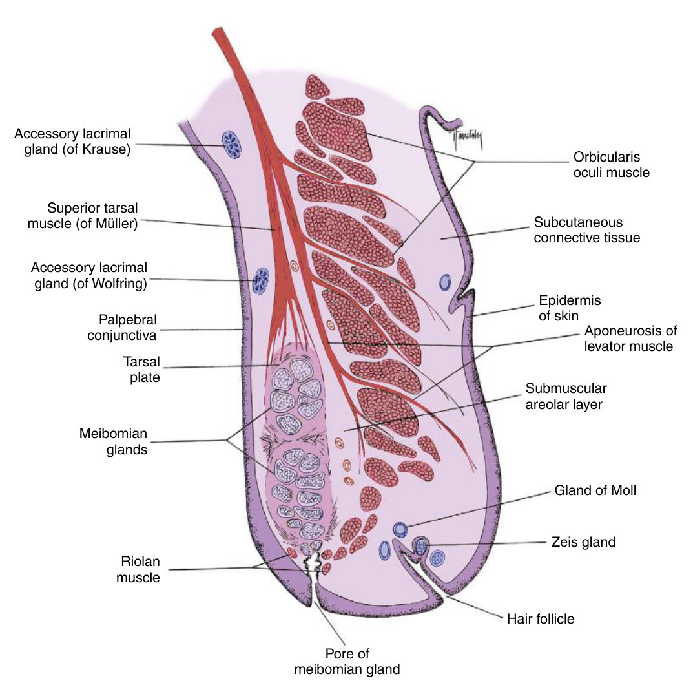
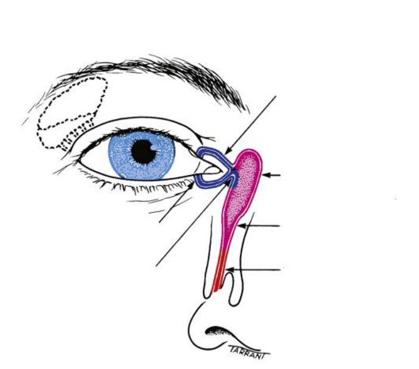
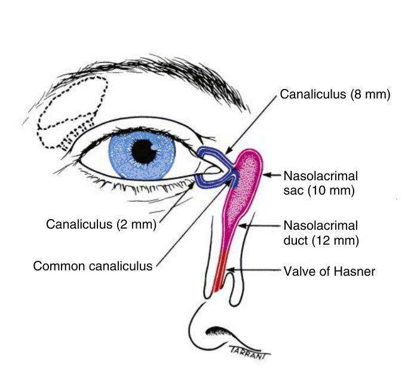

Which gland, which layer, which way out
Three gland-to-layer chains and one drainage route — the two things the guidelines ask you to describe, not just name.
Say, without looking: which gland makes which tear layer, and the route a tear takes from the gland to the nose. Then tell a mild ptosis from a severe one and name the muscle behind each.
Prof. Goodwin's objectives for "Ocular Adnexa", in her words: identify the external features of the eyelids · describe the functions of each structure · describe the function of each muscle · describe the difference of ptosis appearance depending on the muscle involved · describe how the glands contribute to the different tear layers · describe how the tears drain from the orbit.
Your own typed note beside them reads "ablauf von tränendrüse bis nase" — the route from the lacrimal gland to the nose. That is section 3 below.
Exam guidelines · p. 1 · Your notes
1. Gland → layer, as three chains
Learn these as chains, not as a list. In the exam you will be asked for the contribution, which means gland, route and layer in one breath.
Handout 2 · p. 6–8 · TB 2 · p. 16, 19, 24
| Layer | Made by | What it does |
|---|---|---|
| Lipid · outer | meibomian glands, holocrine | slows evaporation · lubricates lid movement · lowers surface tension so tears do not spill |
| Aqueous · middle | main and accessory lacrimal glands, merocrine | moisture, oxygen, antibacterial proteins (lysozyme, lactoferrin) |
| Mucin · inner | goblet cells of the conjunctiva | makes the aqueous stick to the surface and spread evenly |
Zeis (sebaceous, at the lash follicle) keeps the lash from going brittle. Moll (apocrine) adds antimicrobial proteins. Neither feeds the film — a favourite distractor.
Secretion modes, worth one line: holocrine = the whole cell breaks down (meibomian) · apocrine = part of the cytoplasm is pinched off (Moll) · merocrine = only the product leaves (lacrimal).
TB 2 · p. 16, 20–22
2. Find the glands on the section

Before you open the answer: point to the meibomian glands, the Zeis glands and the accessory lacrimal glands. Reason from position — tarsal plate, lash follicle, fornix — not from memory.
Answer: Fig. 2.13 with labels

Left, top down: accessory lacrimal gland (Krause) · superior tarsal muscle (Müller) · accessory lacrimal gland (Wolfring) · palpebral conjunctiva · tarsal plate · meibomian glands · Riolan muscle. Bottom: pore of a meibomian gland. Right, top down: orbicularis oculi · subcutaneous connective tissue · epidermis · levator aponeurosis · submuscular areolar layer · gland of Moll · Zeis gland · hair follicle.
3. From the lacrimal gland to the nose
This is the route your note asks for. The handout names the last five boxes; the first ones are how the tear gets there.
About 75% of tears leave this way; the rest evaporate or are absorbed by the conjunctiva. What moves them: the blink closes the lids from lateral to medial, pushing tears to the lake; capillary attraction draws them into the puncta; and the Horner muscle pump shortens the canaliculi and expands the sac.
TB 2 · p. 24–26 · Handout 2 · p. 8 · Slides 2 · #10

Name the six lines and give the lengths: the exam likes the numbers here.
Answer: Fig. 2.31 with labels

Canaliculus, horizontal part (8 mm) · nasolacrimal sac (10 mm) · nasolacrimal duct (12 mm on the figure, ~15 mm in the text — know both) · valve of Hasner · canaliculus, vertical part (2 mm) · common canaliculus.
Ectropion: orbicularis tone is lost, the margin turns out, the punctum leaves the lake and tears overflow — epiphora. Entropion: the orbicularis spasms or a scar pulls the margin in, and the lashes abrade the cornea. Both are commoner in the lower lid. TB 2 · p. 13 · Handout 2 · p. 4
4. Ptosis: the appearance tells you the muscle
| Muscle lost | Supplied by | Appearance | Classic cause |
|---|---|---|---|
| Müller (superior tarsal) | sympathetic | mild, easily missed — it only adds about 2 mm of lift | Horner syndrome |
| Levator palpebrae | CN III, superior division | severe, obvious, may close the eye | CN III palsy |
In both, the patient recruits the frontalis: the brow on that side rides up and the forehead wrinkles. That raised brow is your clue that the droop is real and not just a sleepy lid.
TB 2 · p. 15 · Slides 2 · #8 · Handout 2 · p. 6
Palpebral fissure 11 mm (Caucasian) / 8.5 mm (Asian) · upper lid covers the limbus by 1.5–2 mm · upper tarsal plate 10 mm / 8 mm, lower 5 mm · meibomian glands 25–40 upper, 20–30 lower · whole tear film 4–8 µm · canaliculus 2 mm + 8 mm · sac 10 mm.
5. Drill
More of the same: Mixed quiz — Chapter 2 · pictures only: Image quiz — Chapter 2.
Read study script § chapter 2, sections 4–6, then Handout 2 pages 6–8 — the glands, the tear film and the drainage. If you only have ten minutes, redraw the drainage chain from memory.
Ask your teacher — "why does a blocked punctum cause watering rather than dryness?", "quiz me on gland → layer until I stop hesitating", "show me Fig. 2.2 and make me name the five features".